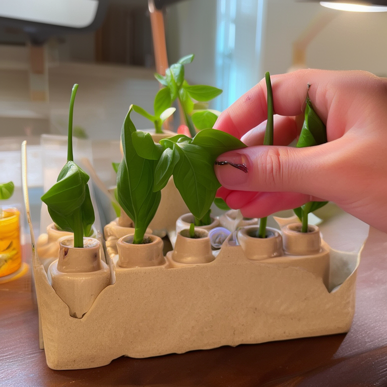
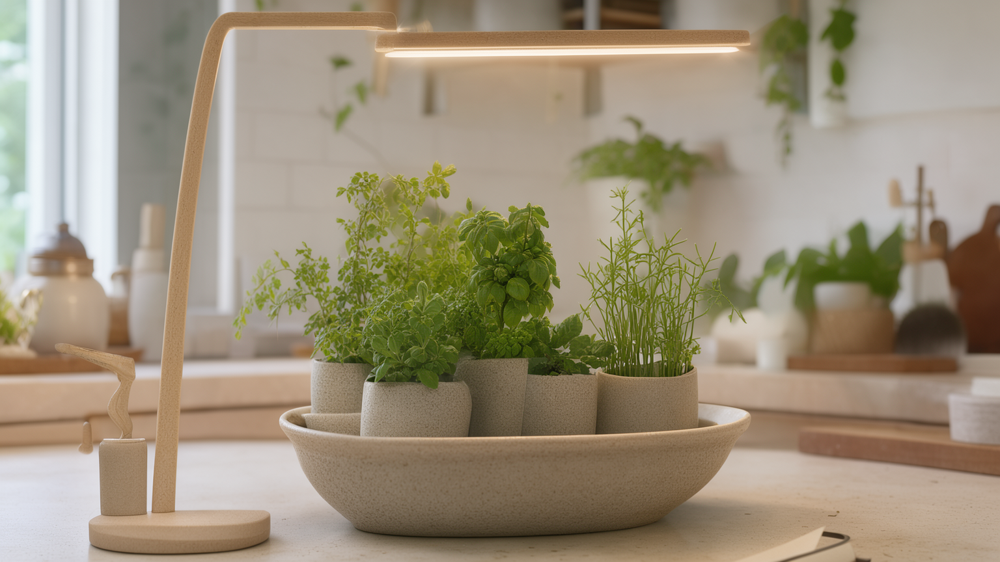
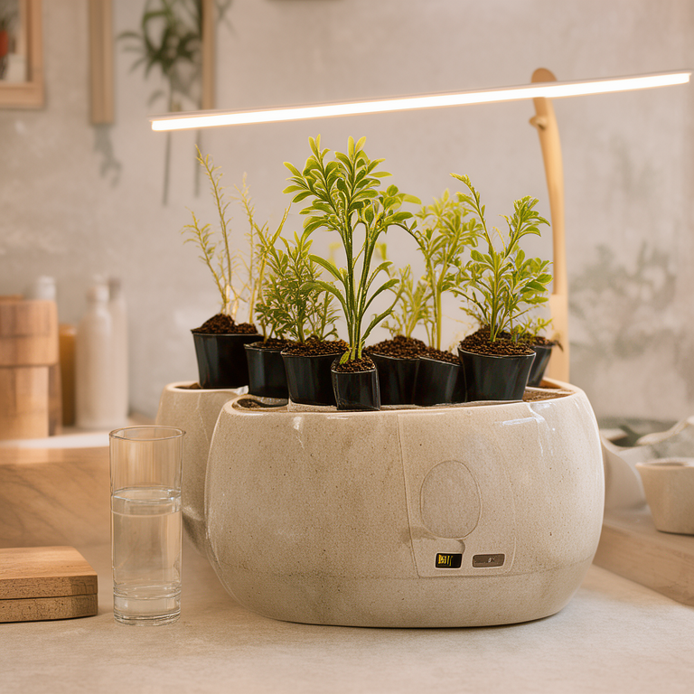
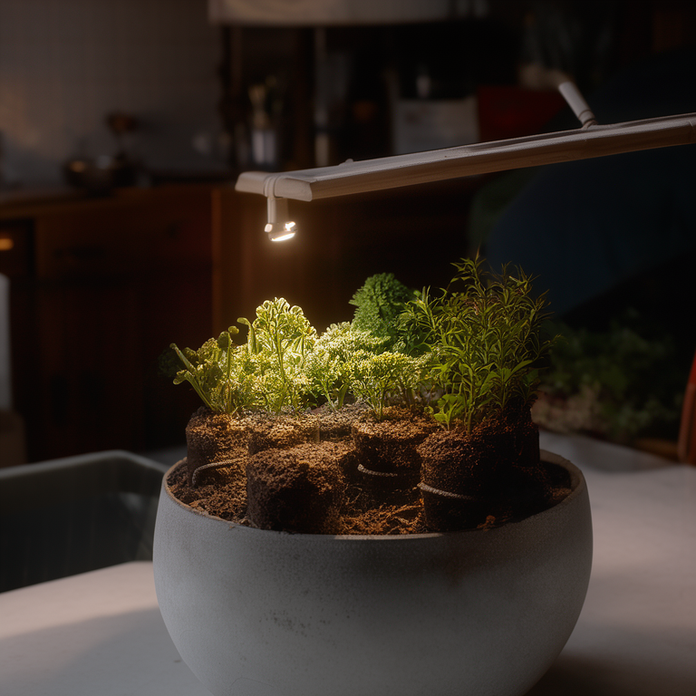
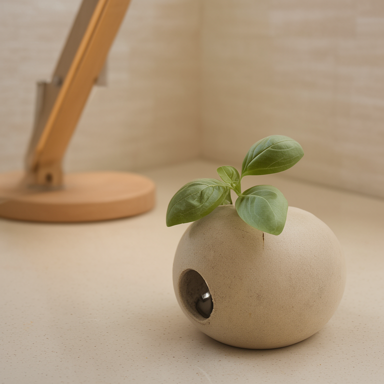

Pick, don't buy
Basil, mint, and chives reach picking height in about two weeks. Each pod is a sealed, soil-free unit: drop it in, and the herbs do the rest.

Fernwell is a soil-free herb garden for small kitchens: six pods, a self-watering tank, and a warm grow light on a slim oak arm.
Drop a pod in the morning, snip what you need at dinner. No soil on the counter, no dead plants in the bin.
Pre-order — €129
Basil, mint, and chives reach picking height in about two weeks. Each pod is a sealed, soil-free unit: drop it in, and the herbs do the rest.

The ceramic base holds a full tank of water, and you refill about once every three weeks. A small green light on the base tells you when the tank is running low.

The slim oak arm holds a warm grow light on a quiet 12-hour cycle. No UV, no hum, and dim enough to leave on in a dark kitchen.
The best part is the habit. A pinch of basil into the pan, a sprig of mint into the glass. Fernwell keeps the herbs alive so the habit can.

€129, shipping in spring 2027. Refill pods are €12 and last about three weeks — the same rhythm as the tank, which you refill about once every three weeks.
Pre-order — €129